UBRF — Visual Fidelity Gate, screenshot-pack
Head abd73b0465eeb8e0fc88699e4810bf7fb7fe26c8 · renderad 2026-09-04T05:11:14.720Z · 12 kameror · figuren dold i 0.
Statuskedja: IMPLEMENTED → AUTOMATED_GREEN → VISUAL_PACK_READY → CHATGPT_VISUAL_PASS → READY_FOR_PRODUCT_ACCEPTANCE → PRODUCT_ACCEPTED. Det här paketet är VISUAL_PACK_READY som mest. Ingen automation sätter en visuell status; grön CI är inte visual fidelity. Se docs/VISUAL-FIDELITY-GATE.md.
STALL-ENTRE · STALL-UPPEHALL · STALL-TEORISAL · STALL-SADELKAMMARE · STALL-GANG-A · HASTPASSAGE · RIDHUS-ENTRE · RIDHUS-SKAPKORRIDOR · ARENA-A · ARENA-C · LAKTARE · C-BLOCK-OVRE
STALL-ENTRE — Stallhuset entré
Innanför parkeringssidans entré, blicken söderut in i uppehållsrummet
Referens references/buildings/stall/stall-entre-15-dorren.jpg references/buildings/stall/stall-entre-16-runda-fonstren.jpg Implementation @ abd73b0 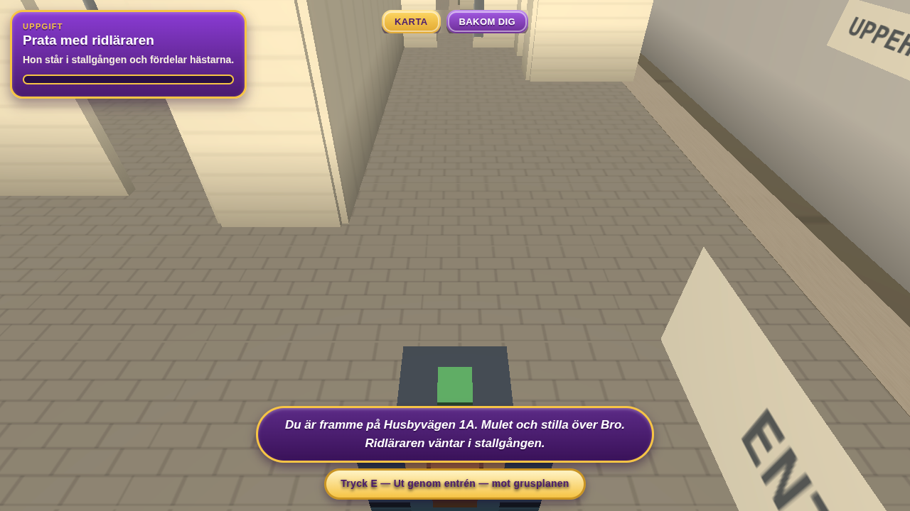
spelare [4.55,68.4,0] · kamera [4.55,3.06,69.35] · tonade väggar 0 · siktprov: synlig
Mismatch-status (ChatGPT) EJ_GRANSKAD Mismatch — REFERENCE GAP vindfångets insida: ingen interiörbild
STALL-UPPEHALL — Uppehållsrum
Uppehållsrummet från norra änden söderut — EN öppen L-formad yta (Spatial Canon v2 stall_uppehall_open)
Referens references/buildings/stall/stall-inne-01-uppehallsrummet.jpg references/buildings/stall/stall-inne-02-pentryt.jpg Implementation @ abd73b0 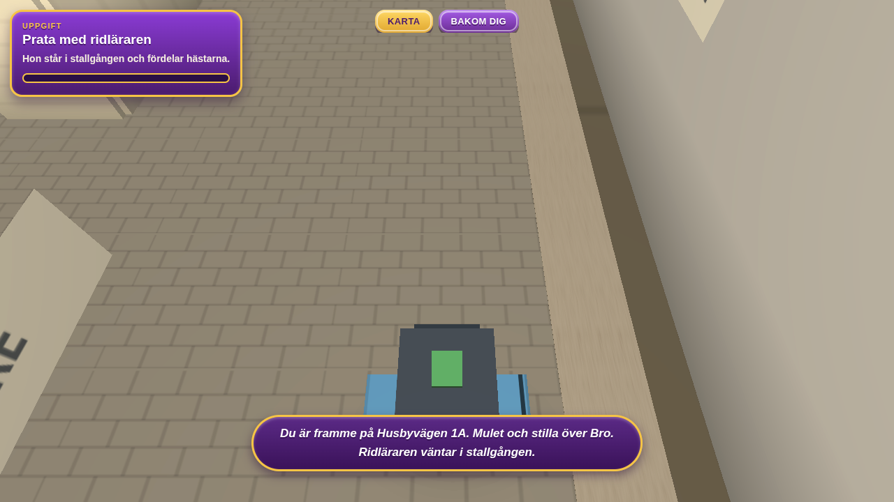
spelare [2,68.75,0] · kamera [2,3.46,69.35] · tonade väggar 0 · siktprov: synlig
Mismatch-status (ChatGPT) EJ_GRANSKAD Mismatch — REFERENCE GAP möbler (F02-B) saknas ännu — inte ett fel i F02-A
STALL-TEORISAL — Teorisal
Innanför teorisalens dörr (västväggen), blicken österut genom salen
Referens references/buildings/stall/stall-inne-04-teorisalen.jpg Implementation @ abd73b0 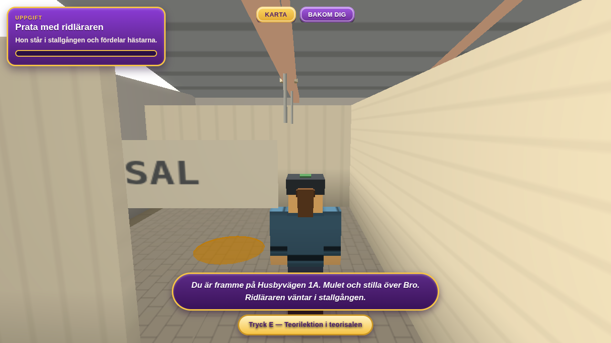
spelare [12.5,65.65,0] · kamera [9.17,2.25,65.65] · tonade väggar 0 · siktprov: synlig
Mismatch-status (ChatGPT) EJ_GRANSKAD Mismatch — REFERENCE GAP möbler (F02-B) saknas ännu
STALL-SADELKAMMARE — Sadelkammare
Innanför sadelkammarens öppning i den genomgående väggen, blicken nordost genom rummet
Referens references/buildings/stall/stall-inne-03-sadelkammaren.jpg Implementation @ abd73b0 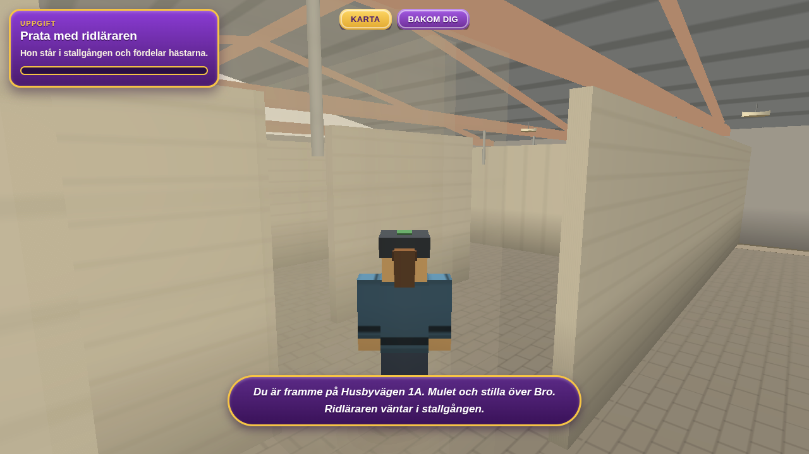
spelare [8.25,58.65,0] · kamera [5.9,2.25,56.3] · tonade väggar 3 · siktprov: synlig
Mismatch-status (ChatGPT) EJ_GRANSKAD Mismatch — REFERENCE GAP sadelhängare och inredning (F02-B) saknas ännu
STALL-GANG-A — Stallgång A
I gång A, blicken norrut mot klubbdelen — boxfronter på båda sidor
Referens references/buildings/stall/stall-inne-05-stallgangen.jpg references/buildings/stall/stall-inne-08-breda-gangen.jpg Implementation @ abd73b0 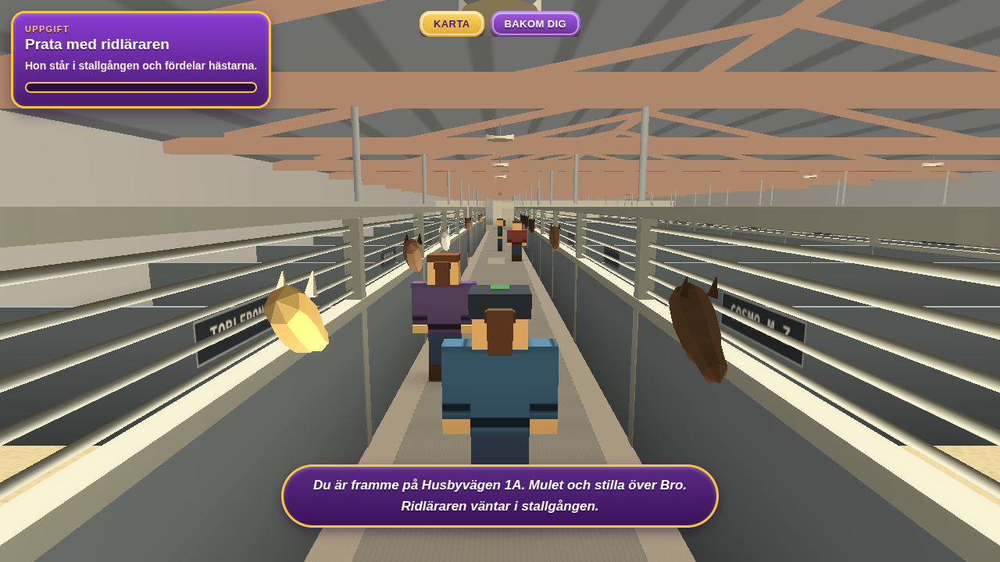
spelare [5.69,12.8,0] · kamera [5.69,2.25,9.47] · tonade väggar 0 · siktprov: synlig
Mismatch-status (ChatGPT) EJ_GRANSKAD Mismatch — REFERENCE GAP vilken av gångarna varje foto visar är inte belagt (INTERIOR-MATRIS i05/i08)
HASTPASSAGE — Hästpassage
I gång A mitt för hästgångens brott i västra boxraden, blicken västerut in i passagen mot ridhuset
Referens references/plans/SATELLIT-HASTGANG-2026-08-30.md Implementation @ abd73b0 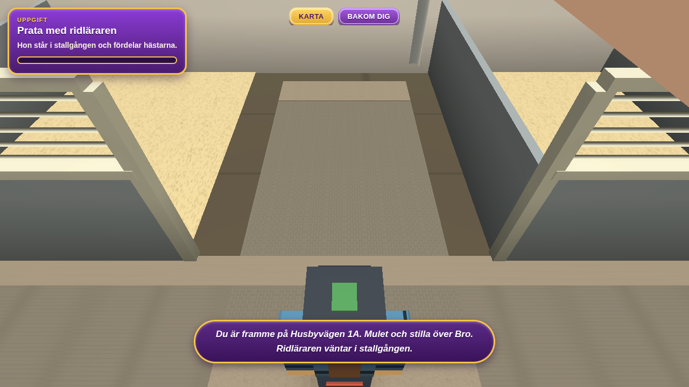
spelare [5.69,29.55,0] · kamera [6.48,3.29,29.55] · tonade väggar 0 · siktprov: synlig
Mismatch-status (ChatGPT) EJ_GRANSKAD Mismatch — REFERENCE GAP passagens insida: ingen bild; läget längs husen är härlett (SITEPLAN)
RIDHUS-ENTRE — Ridhuset entré
Huvudentrén → norrut över entré/reception: öppen hall, receptionens glas till höger (= golden view RIDHUS-V1)
Referens references/buildings/ridhus/ridhus-klubb-01-omkladningsgangen.jpg references/buildings/ridhus/ridhus-klubb-15-korridoren-mot-glasrummen.jpg references/buildings/ridhus/ridhus-klubb-02-glasrummen.jpg Implementation @ abd73b0 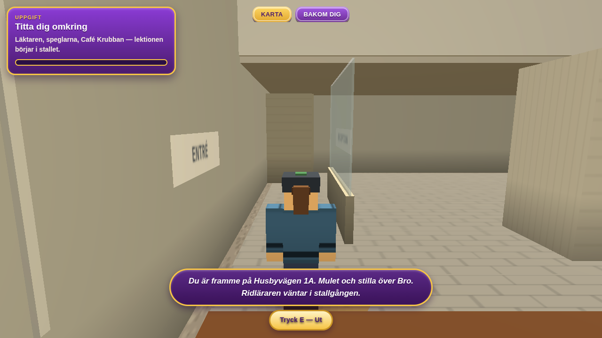
spelare [1.3,66.98,0] · kamera [1.3,2.25,63.65] · tonade väggar 0 · siktprov: synlig
Mismatch-status (ChatGPT) EJ_GRANSKAD Mismatch — REFERENCE GAP receptionsglasets väderstreck (GEOMETRY_REFERENCE_GAP)
RIDHUS-SKAPKORRIDOR — Skåpkorridor
Den öppna gången där skåpen står (planens x 4,2–5,7), blicken norrut mot toaletterna
Referens references/buildings/ridhus/ridhus-klubb-16-skaprummet-med-pelaren.jpg references/buildings/ridhus/ridhus-klubb-18-skapraden-narbild.jpg references/buildings/ridhus/ridhus-klubb-20-grona-skapen.jpg references/buildings/ridhus/ridhus-klubb-21-grona-skapen-vinkel.jpg Implementation @ abd73b0 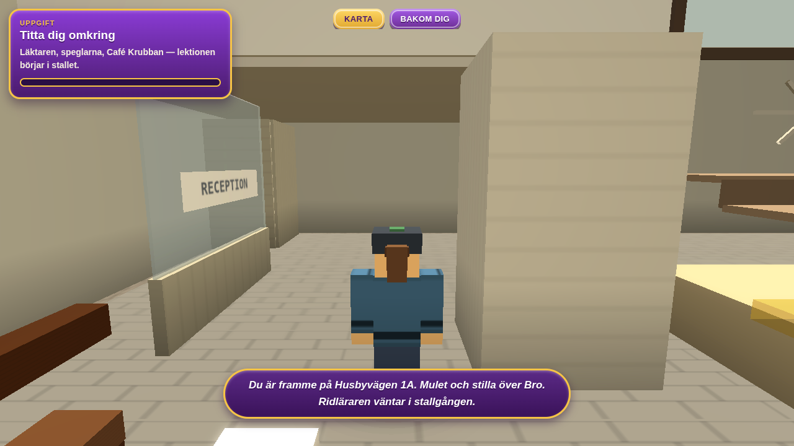
spelare [4.95,67.98,0] · kamera [4.95,2.25,64.65] · tonade väggar 0 · siktprov: synlig
Mismatch-status (ChatGPT) EJ_GRANSKAD Mismatch — REFERENCE GAP skåpen är möbler (F02-B) och saknas ännu; korridorväggarna är återkallade (Spatial Canon v2) — här ska INGEN vägg synas
ARENA-A — Arena A-sida
På banan nära A, blicken söderut mot kortsidan vid A
Referens references/buildings/ridhus/ridhus-inne-23-kortsidan-vid-a.jpg references/buildings/ridhus/ridhus-inne-11-ridbanan.jpg Implementation @ abd73b0 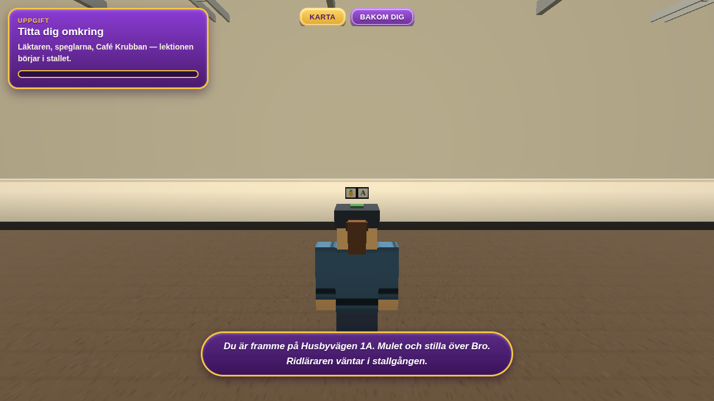
spelare [14.4,6.15,0] · kamera [14.4,2.25,9.48] · tonade väggar 0 · siktprov: synlig
Mismatch-status (ChatGPT) EJ_GRANSKAD Mismatch — REFERENCE GAP —
ARENA-C — Arena C-sida
På banan nära C, blicken norrut mot C-blocket, glasbandet och trapporna
Referens references/buildings/ridhus/ridhus-inne-01-glasrummen.jpg references/buildings/ridhus/ridhus-inne-06-laktaren-och-glasrummet.jpg references/buildings/ridhus/ridhus-inne-27-glasrummet-inifran-banan.jpg Implementation @ abd73b0 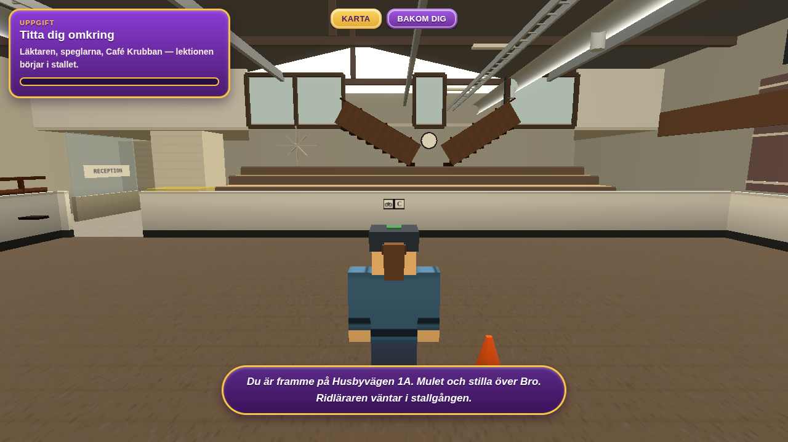
spelare [14.4,57.68,0] · kamera [14.4,2.25,54.35] · tonade väggar 0 · siktprov: synlig
Mismatch-status (ChatGPT) EJ_GRANSKAD Mismatch — REFERENCE GAP Café Krubbans rum bakom glaset byggs inte (REFERENCE GAP)
LAKTARE — Läktare
På läktardäcket, blicken söderut längs läktaren med banan till vänster
Referens references/buildings/ridhus/ridhus-inne-14-laktaren.jpg references/buildings/ridhus/ridhus-inne-41-banan-fran-laktaren.jpg references/buildings/ridhus/ridhus-inne-40-domartornet-pa-laktaren.jpg references/buildings/ridhus/ridhus-inne-43-laktaren-vid-h.jpg Implementation @ abd73b0 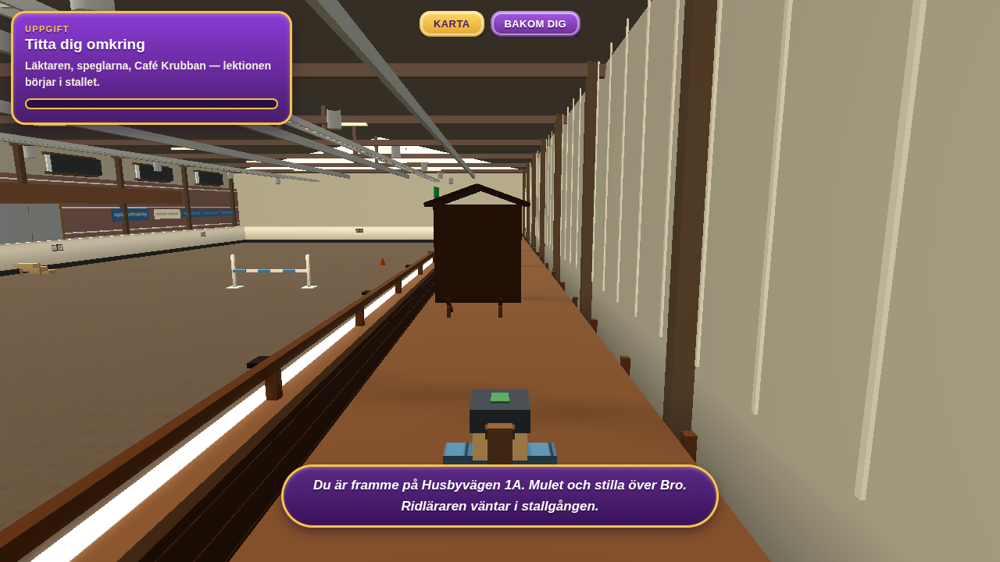
spelare [2.3,38.92,0.8] · kamera [2.3,3.05,42.24] · tonade väggar 0 · siktprov: synlig
Mismatch-status (ChatGPT) EJ_GRANSKAD Mismatch — REFERENCE GAP läktargångens tredje trappa vid H byggs inte (utanför F02-A)
C-BLOCK-OVRE — C-block / övre relation
Från nedersta bänkraden vid klockan (som ridhus-inne-01): raderna, de två loppen, klockväggen, glasbandet och övre gången
Referens references/buildings/ridhus/ridhus-inne-01-glasrummen.jpg references/buildings/ridhus/ridhus-inne-07-laktartrappstegen.jpg references/buildings/ridhus/ridhus-klubb-10-overvaningens-gang.jpg references/buildings/ridhus/granskning-2026-08-31/C-kortandan-och-kafeet.md Implementation @ abd73b0 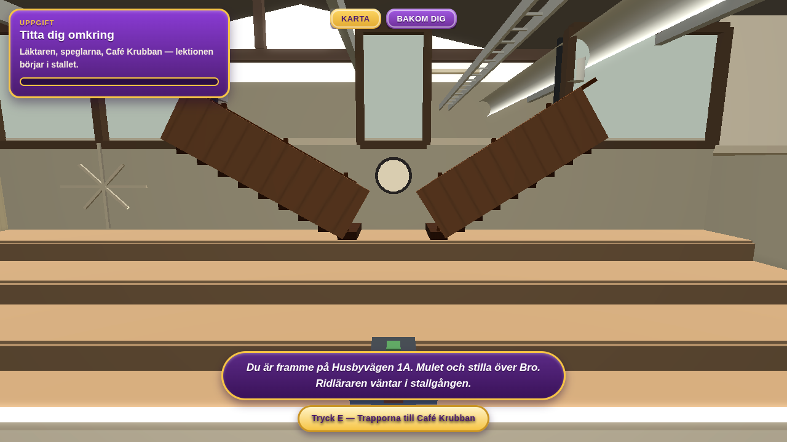
spelare [15.8,66.28,1.12] · kamera [15.8,3.37,62.95] · tonade väggar 0 · siktprov: synlig
Mismatch-status (ChatGPT) EJ_GRANSKAD Mismatch — REFERENCE GAP hall → nedersta raden: inget foto (spelets bänkradssteg är SPELABSTRAKTION, gul markör)